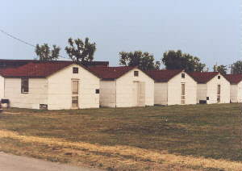

As one enters Camp Perry through the main entrance
off Ohio Route 2 you will notice the 2 stone towers on either
side of the gate. These are not as old as they look. Both were
built as a WPA project in 1937 after the State of Ohio had
purchased all or parts of 6 farms as our addition to the military
reservation. Both towers were of field-stone construction and had
flat roofs. The red brick capalos at the top was added during
WWII.
The main entrance road is Niagara Road, named in honor of
Commodore Perry's second and winning flagship in the Battle of
Lake Erie. When the State Legislature authorized purchase of land
for the camp in 1906, they specified it should be named for
Oliver Hazard Perry, who won control of Lake Erie by capture of
the entire British fleet on September 10, 1813. Legislation may
or may not have called for naming roads within the camp to be
named for Perry's ship. At present time there are roads named
Niagara, Lawrence (Perry's first flagship), Caledonia (captured
from British in eastern Lake Erie the previous year), Arid,
Scorpioro, Sommers, and Trippe. However, several former Ohio
Governors have roads named for them as well. These are: Cox,
Davey, Davis, Cooper, Donahey and Harrison Roads. There are at
least 4 roads named for men who had long and important
connections with the camp. These are: Clem Road, Critchfield Road
(this was first called Critchfield Circle), and is a circular one
way road; St. Clair Road; and Cartright Trail. Major General
James Clem, who was Ohio's Adjutant General, did much to preserve
and restore the reservation, which had become badly run down. One
of his achievements was the rebuilding of the pier which had been
nearly destroyed by Lake Erie's gales. Adjutant General Ammon B.
Critchfield founded the camp and was in charge of the early
construction of ranges, roads, and buildings. Warrant Officer
Dennis St. Clair served with the permanent personnel of Camp
Perry for many years, and his efforts brought about construction
and renovation of many buildings and the memorial plaza.
Several former members of the 37th Infantry Division were honored
by leaving the ranges and the larger permanent buildings named
for them. These men were winners of the Medal of Honor during WWI
and WWII.
The first structure erected after purchase of the original camp
may have been the original pier. The roads in 1906 were usually
only of dirt or gravel, and usually were impassable, except
during dry weather. The lumber, stone, etc. needed for
construction of the first buildings were brought from Port
Clinton by boat.
Another early structure was a large gambrel roofed barn,
constructed east of Niagara Road and north of present day
Caledonia Road.This was needed at once to house the large number
of horses and mules and feed for them. Some of the existing farm
houses were used to house many of the construction workers
engaged in building of the camp. The barn was razed during WWII.
The Mess Hall, old QM Warehouse, and the Baggage Station were the
first new buildings put to use for the first National Matches in
1907. The Mess Hall and the Warehouse were both built of precast
concrete, which was a new process for building construction at
that time.
The Post Theater (building No. 2) has had 3 names since its
construction in the late 1930s. Since Ohio's Governor then was
Martin L. Davey it was named Davey Auditorium. During WWlI it
became Army Auditorium.

When the camp reverted to state control
after that war it was named Hough Auditorium. Benson Hough had
been the Regimented Commander of the 166th Infantry of the
Rainbow Division of WWI. He later served as Commander of the 37th
Division between the World Wars and as Ohio's Adjutant General.
The small white huts scattered over much
of the camp were built during WWII as temporary quarters. Most
housed Italian and German POWs. After WWII and again after the
Korean War the huts became quarters for units training or
conducting firing practice at Perry. At that time they were still
covered with black tar paper of the WWII era. Many have been
replaced by barracks and modular housing, but most still remain.